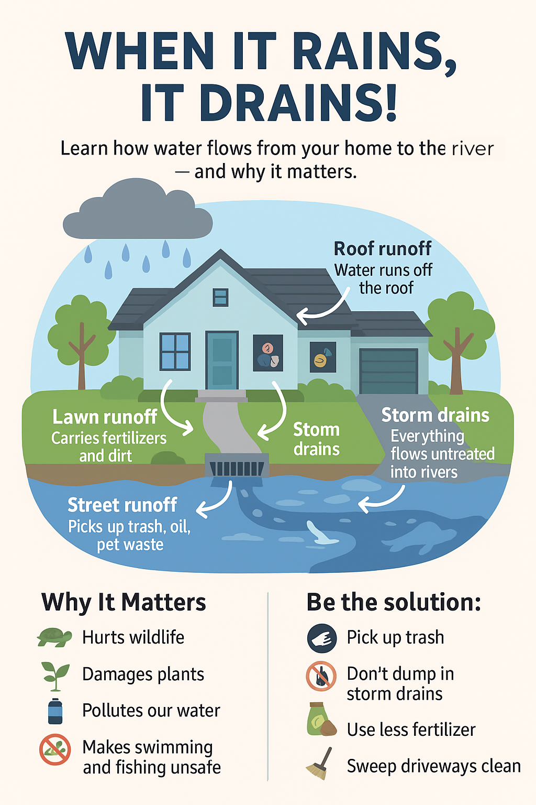

Why Protect the San Marcos River?
San Marcos River is a delicate lifeline, a sensitive and rich ecosystem with a storied history spanning millennia. It sustains a unique blend of biodiversity—one that includes species found nowhere else on Earth—and carries the cultural legacy of indigenous peoples and early settlers.
This natural wonder, born from over 200 spring openings at the Edwards Aquifer, nurtures life in an otherwise arid region. Its crystal-clear, steady 72°F waters provide a haven for eight federally listed endangered species, including the exclusive Texas wild rice, the elusive Texas blind salamander, and the diminutive San Marcos salamander. With dwindling springflows and mounting human impacts, every drop counts, and the future of this ecological jewel hangs in the balance.
Key Historical Milestones
Over 12,000 Years Ago
First human habitation around San Marcos Springs
1849
First dam built at the headwaters by Gen. Burleson
1978
Texas wild rice listed as endangered due to habitat loss
2016
Vote to remove Cape’s Dam to restore flow
United for the River: A Coalition Protecting San Marcos
In San Marcos, Texas, a dynamic network of organizations is working together to safeguard the San Marcos River and its ecosystem.
Texas State University
Turns the river into a living lab focused on biodiversity and water quality.
Keep San Marcos Beautiful
Leads cleanups and promotes environmental awareness in the community.
City of San Marcos
Implements water conservation and stormwater management policies.
Meadows Center
Protects spring-fed ecosystems through education and conservation research.
Join Our River Cleanups
Every spring and fall, the City of San Marcos and Keep San Marcos Beautiful host free public river cleanups. Everyone is welcome!
How Stormwater Pollutes the River
Stormwater runoff picks up trash, oil, fertilizers, and pet waste from streets and carries them into the river — without any filtering. Learn how you can help prevent this pollution.
